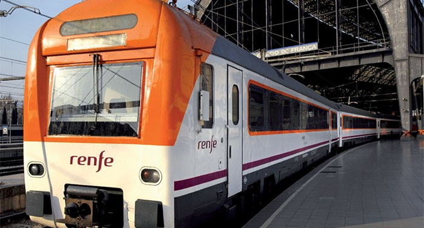
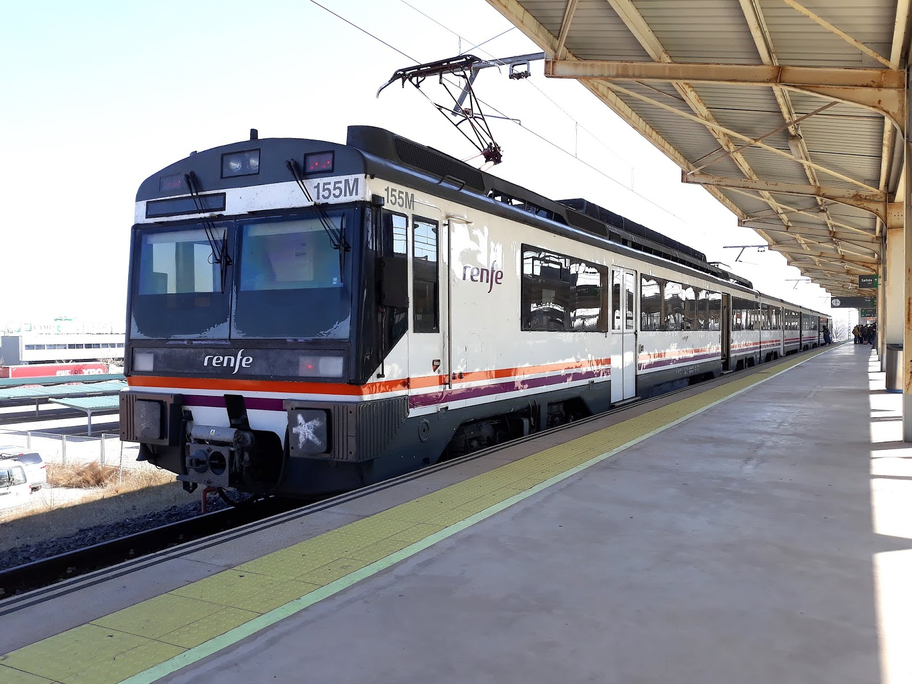
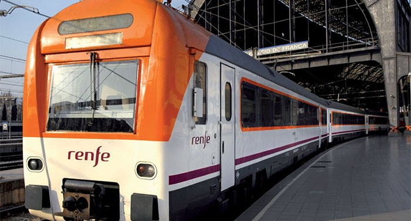
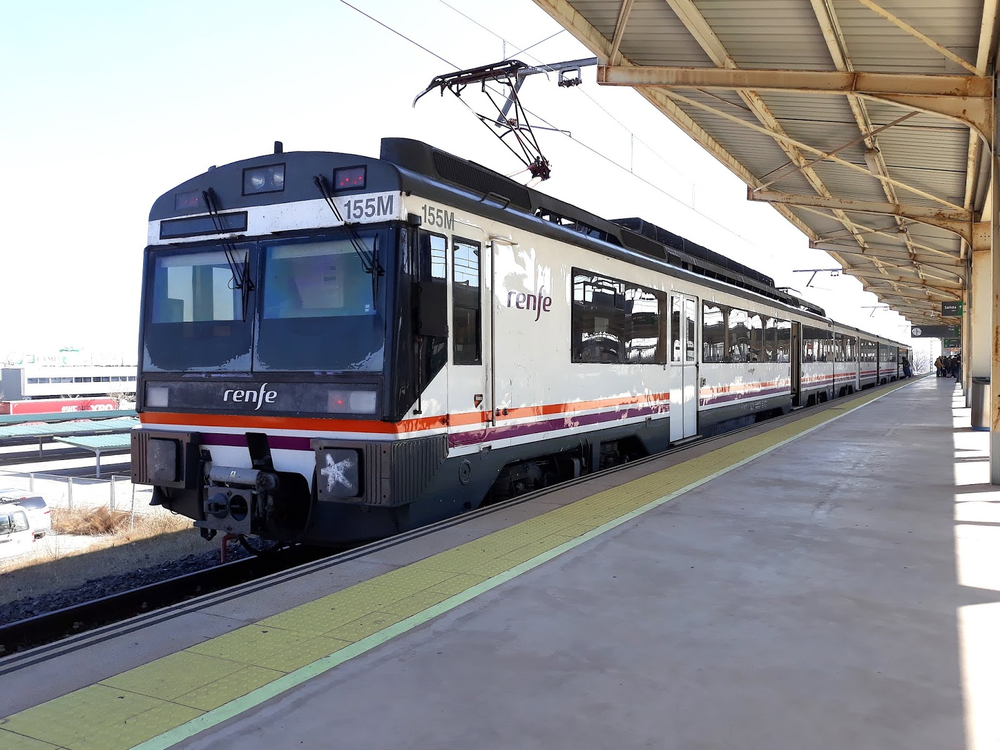
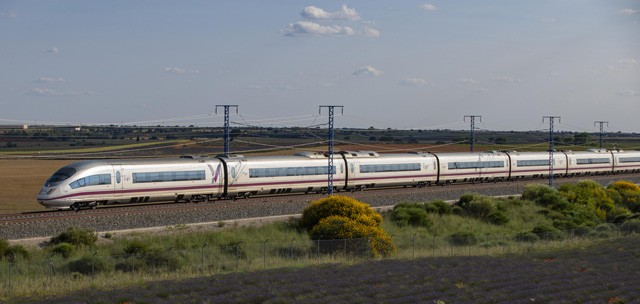
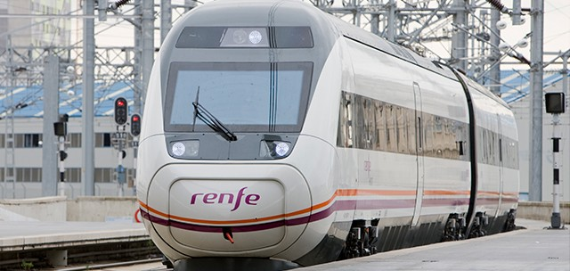
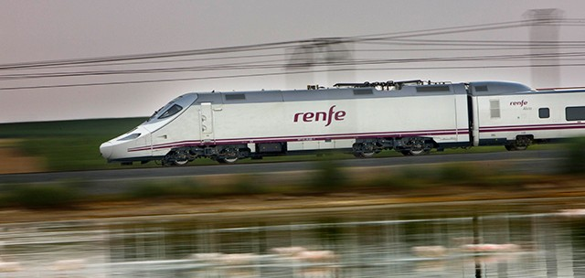

Trens de Rodalies
 



Aquests són exemples d'alguns dels models de ferrocarrils que circulen per la xarxa de curta i mitja distància a la zona del Camp de Tarragona, normalment connectant amb Barcelona, Tortosa i Lleida, però arribant fins a Saragossa, València i Madrid.
Trens d'Alta Velocitat



En quant a l'Alta Velocitat, trobem trens molt més moderns i que ofereixen grans prestacions, com l'S-103, l'S-121 (AVANT) i l'S-130 (amb canvi d'ample de via).